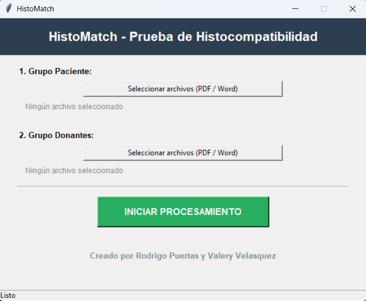
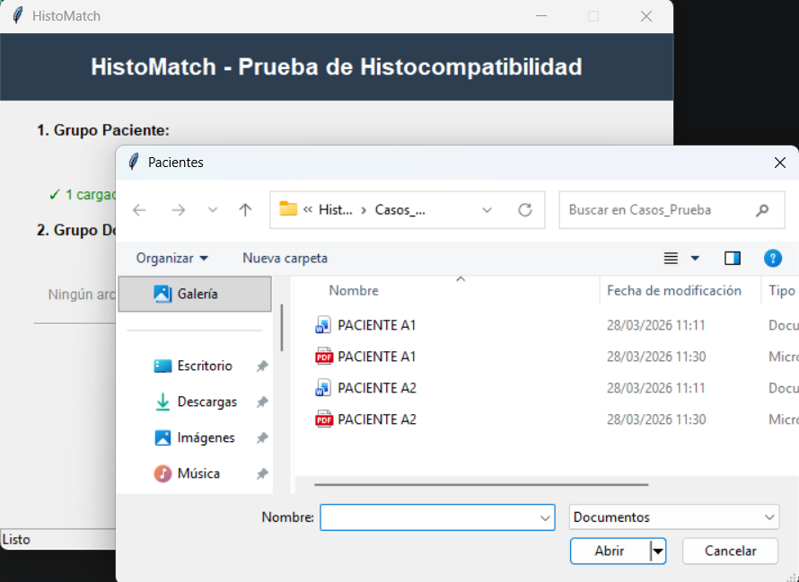
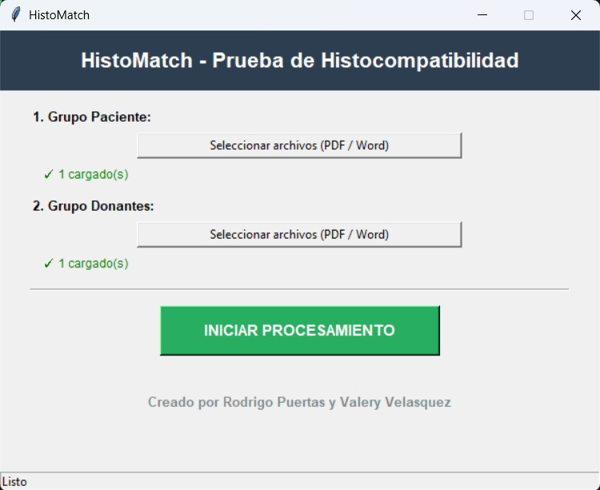
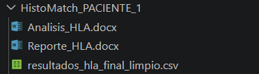

Desarrollado por Rodrigo Puertas y Valery Velasques
HistoMatch es una aplicación de escritorio basada en Python diseñada para automatizar el análisis de compatibilidad HLA. Proporciona una interfaz gráfica intuitiva construida con Tkinter, permitiendo a los usuarios automatizar el análisis de histocompatibilidad y la generación de reportes.
Automatiza la evaluación de compatibilidad HLA en cinco loci clásicos, clasificando cada uno en cinco categorías y generando un puntaje global (1–10).
main.pyhla_finder.py – extrae datos HLA de archivos PDF/Word y los exporta a CSVhistomatch_analisis.py – analiza el CSV y exporta los resultados de compatibilidad a un archivo DOCX ("Analisis_HLA")histomatch_reporte.py – resume la información clave de "Analisis_HLA" en un reporte DOCX ("Reporte_HLA")Los scripts están en este repositorio (también se incluyen archivos HLA de ejemplo):
Descargar HistoMatchmain_app.py,
hla_finder.py, histomatch_analisis.py, histomatch_reporte.py).
También se incluyen dos archivos HLA de ejemplo.pip install pdfplumber pandas python-docx pywin32python main.pypython main_app.py


